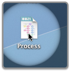
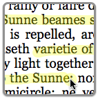
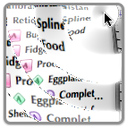

OmniDazzle is a set of visual effects for your screen and mouse pointer. You can highlight areas of the screen during a demonstration, prepare screen shots, keep track of your cursor on a big display, draw pictures on the screen, or just enjoy the graphical might of the modern Mac.
Here's how to use OmniDazzle:
- Choose an effect plug-in from the main window.
- Check the effect information for a description of how the plug-in
works and an explanation of its commands.
- Use those commands in any application to activate and deactivate
the effect.
- If you like, change the commands to activate using keys, buttons,
or a shake of the mouse.
- If you want to change the look of the effect, adjust the settings
to your liking.
- When you're ready to try a different effect, use the menu bar extra to select a different effect, or to summon the main window back for more customization.
That's all! Stop reading software documentation and go do something fun!